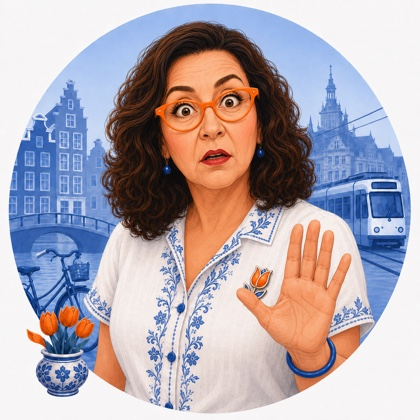

A letter from Tulp de Gid 🌷
Lieve Geltovas, I write to you with every window thrown open and not one breath of wind to show for it, because we are having ourselves a proper hittegolf, our third of the summer already, and not one Dutch person alive has seen them stack up quite this fast this early in the year. Half this country owns exactly one fan and no air conditioning at all, so when I tell you we are all a little pink and a little cross right now, believe me. But do not let the heat put you off falling for July here. There is a fish worth queueing for, a dairymaid worth staring at for an embarrassingly long time, and a monkey out there right now living his very best life. Pour yourself something cold, lieverds, and come sit in the shade with me.

The big story
A third heatwave, and a record nobody wanted
This morning the weather service made it official: the Netherlands has its third regional heatwave of the year, confirmed in the town of Gilze Rijen, and this one arrived only seven days after the last one ended. Nobody alive has seen our heatwaves stack up quite this fast this early in the summer, not even in 2006, the old record holder for the shortest gap between two. Half this country has exactly one fan in the house and no air conditioning at all, so a whole nation being a little pink and a little cross right now is simply the truth of it.
And yet, lieverds, this is also the Netherlands at its most charming. The health institute has quietly reminded everyone to check on elderly neighbours and keep the little ones in the shade, which this country tends to without much fuss and a great deal of care. Every terrace has slid its tables under an awning, the ice cream vans have a queue down the block, and Scheveningen, your own future beach, is packed shoulder to shoulder with people who have decided the sea is the only sensible address today. You will have your own spot on that sand soon enough.
 A few quick things, told quickly
A few quick things, told quickly
The bicycle runs this country, not the car
For most everyday trips under about seven kilometers, the bicycle beats the car here. There are some twenty four million bicycles for not many more people, and over a quarter of all trips nationwide happen on one, along thirty five thousand kilometers of dedicated path. It was not always this tidy. In the 1970s, furious Dutch parents marched under the banner Stop de Kindermoord, "stop the child murder," after too many children were killed by cars, and the country rebuilt itself around the bicycle instead. Amellia will likely learn to balance on two wheels before she learns to swim.

A record seventeen Dutch riders in the Tour de France
While you were reading about our heat, half the country's attention was actually in France, where seventeen Dutch riders lined up for this year's Tour de France, the largest Dutch delegation in eleven years. Mathieu van der Poel, who has worn the leader's yellow jersey before, leads a notably young squad spread across ten different teams. It is a small national holiday every time one of them takes a stage, and this year there are simply more chances for it.

The monkey who has outsmarted an entire safari park
In Noord Brabant, a crested mangabey, a handsome monkey with a little upright crest of hair, has been living free in the woods near Safaripark Beekse Bergen for almost a month now, ever since he leapt his enclosure and swam the moat around it. Keepers rush to every sighting, but he has learned to recognise them, plain clothes or not, and simply disappears again. He is feeding himself well on fruit, seeds, and bark, and the park admits he may stay free for several weeks yet. I confess I am rooting for him a little.
🌷 Tulp's Dutch Calendar Radar
The whole country starts walking, four days straight
Within the week, tens of thousands of people descend on the city of Nijmegen for the Nijmeegse Vierdaagse, the largest multi-day walking event on earth, running Tuesday the 21st through Friday the 24th of July. Walkers choose a distance, thirty, forty, or fifty kilometers, and cover it on foot for four consecutive days, many for a good cause, many simply to see if they still can. The final afternoon is the best of it, when the whole route turns into a parade, strangers hand flowers to strangers, and everybody finishes together under an arch of orange.
 Dish of the week
Dish of the week
Kibbeling, the seaside's answer to a heatwave
When it is this hot, nobody here wants to stand over a stove, so we eat kibbeling instead: bite sized chunks of white fish, usually cod, battered and deep fried until the outside cracks and the inside stays soft. You will find it at every market stall and seaside snack window from Scheveningen to the furthest inland town, always served in a paper tray, always eaten standing up.
It comes with a little pot of remoulade, a garlicky, herby mayonnaise for dipping, and a squeeze of lemon if the stall is feeling generous. It is proof that this country's best cooking is often its simplest, and it travels beautifully to a hot evening in your own kitchen too.
 Artwork of the week
Artwork of the week
The Milkmaid, and the single beam of light that changed painting
This week's painting needs no crowd and no drama, just a woman quietly pouring milk into a bowl in a plain kitchen, and yet Johannes Vermeer's The Milkmaid, painted around 1660, is one of the most beloved paintings this country owns. Look at the light falling through the window on her left. It lands on the bread, the pouring milk, and her forearm with such patient precision that the Rijksmuseum still studies exactly how he built it, layer by layer.
There is nothing grand happening in this picture. She is not a queen or a saint, just a maid at her morning task, and that ordinariness is precisely the point. The Dutch Golden Age fell in love with painting daily life as if it deserved the same reverence as anything in a church, and nowhere is that more tender than here.
 The Hague & Scheveningen dispatch
The Hague & Scheveningen dispatch
A little local history first. Walk inland from Scheveningen into the Zeeheldenkwartier, the Sea Heroes Quarter, and every street carries the name of a Dutch admiral from the 1600s: Michiel de Ruyter above, Piet Hein, Maarten Tromp among them, the men who once commanded a navy that, for a strange and glorious century, rivalled anyone afloat. It is an entire neighbourhood built as a monument to the sea, in a city that never stopped needing one.
And the quarter lived up to its name this month. From the 8th through the 11th of July, Prins Hendrikplein hosted the Zeeheldenfestival, a free four day street party with more than fifty performances, food stalls, and a children's corner, going strong since 1981. If you missed it this time, it returns like clockwork every summer, and by then you will have a street of your own in that same neighbourhood to walk home to. More about the Zeeheldenfestival →
My little pick for the week
For my own pick this week, a nod to Rotterdam, just down the coast from you. The NN North Sea Jazz Festival turned fifty this year, and its anniversary weekend, the 10th through the 12th of July at Rotterdam Ahoy, pulled in some ninety thousand people across seventeen stages for a lineup that had almost nothing to do with jazz alone anymore: John Legend, Diana Krall, Nile Rodgers and Chic, and a very deep bench of genuine jazz greats besides. Fifty years of proving that one weekend by the water can hold almost any kind of music at once. Put it in next July's diary.
On the family calendarFAMILY SECTION - Matt to add during review
This week's calendar tiles and family news note belong here, in Tulp's voice, once Matt confirms what is new (calls, Amellia, travel, home projects). This draft was built in the cloud without the live family catch-up step, so nothing has been invented or carried over stale. Replace this whole block with the real section before sending.
🌷 Tulp's question for the table
Here is something gentle to turn over together this week, on your call or around the table.
The habit you hope survives the move. Now that half the country has gone quiet for the summer and even Tulp is hiding from the sun, tell each other this: once you are all finally under one roof, what is the one small everyday habit from your normal week right now, at home in Portland or in Atlanta, that you most hope carries over. A particular coffee order, a Sunday walk, a phone call at a certain hour. The little rituals are usually what make a strange new place start to feel like home.
That is the letter, my dears. A heatwave, a fish supper, a dairymaid who has been quietly pouring the same milk for over three hundred years, and a monkey who wants nothing to do with any of us. Some weeks here are simply better than others, and this was a good one.
Stay cool if you can, keep an eye on each other in this heat, and I will find you again next week.
Blijf koel, which is exactly what it sounds like: stay cool.
Liefs, Tulp 🌷Tulp's parting shot
A Dutch sunflower field at the height of July, the one month these fields look almost defiantly cheerful against however grey the rest of the year gets. By August they will already be nodding toward autumn.